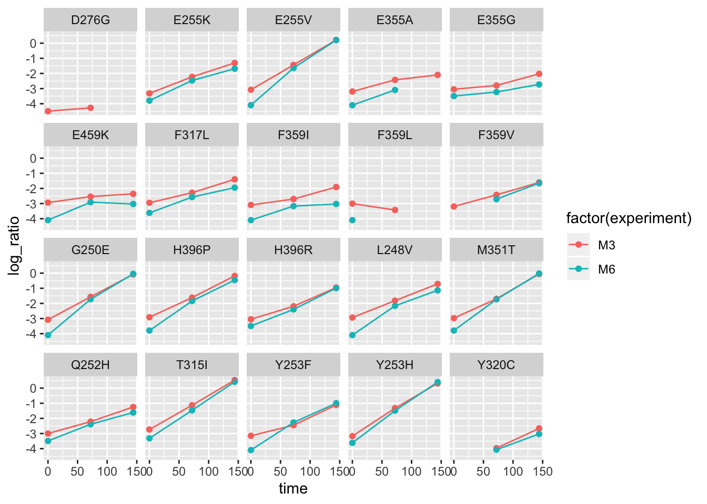
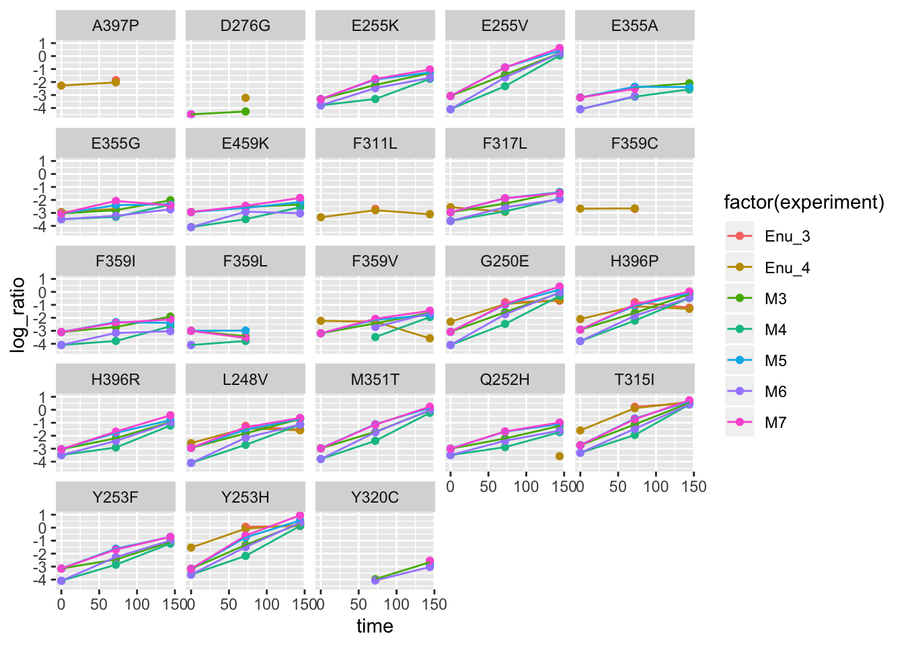
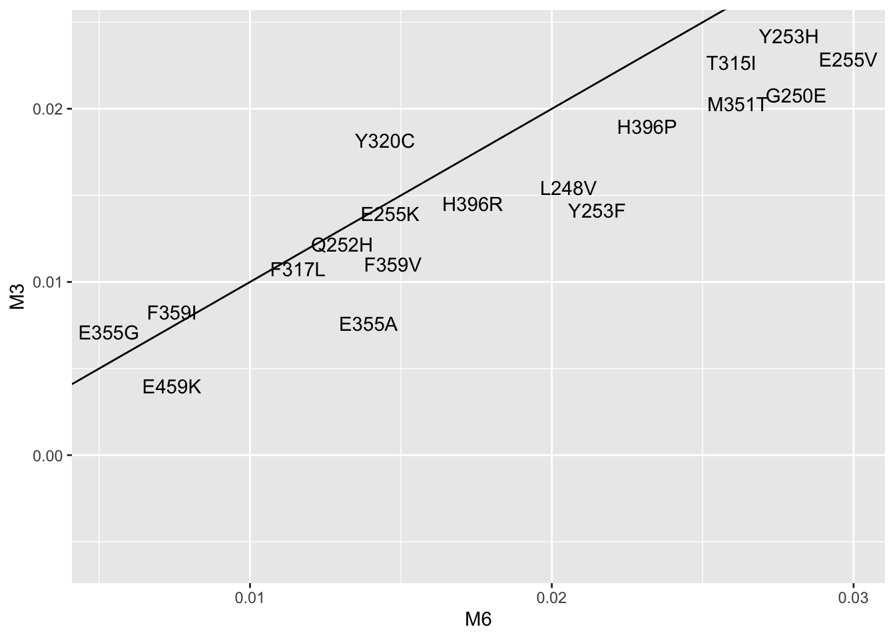
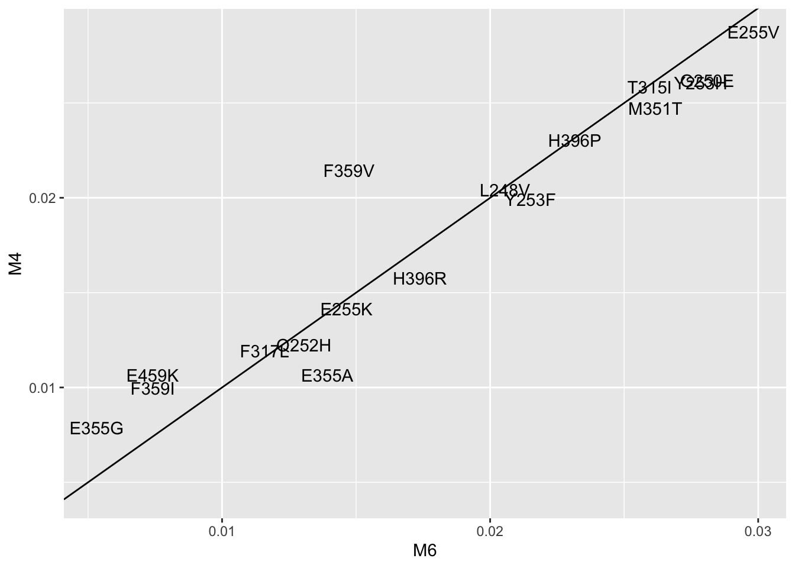
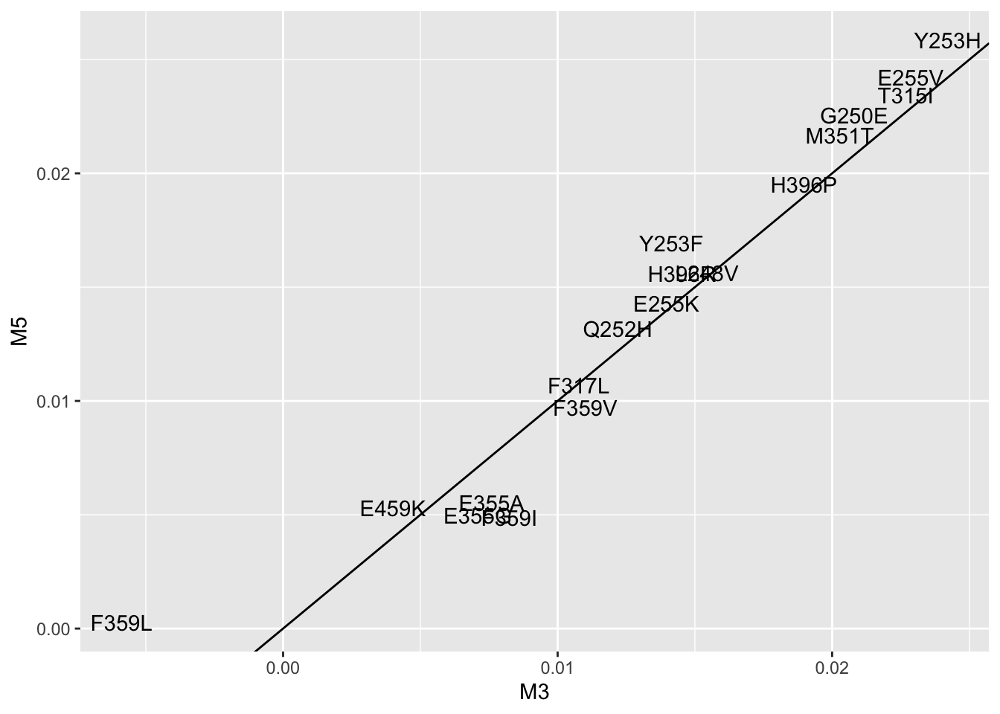
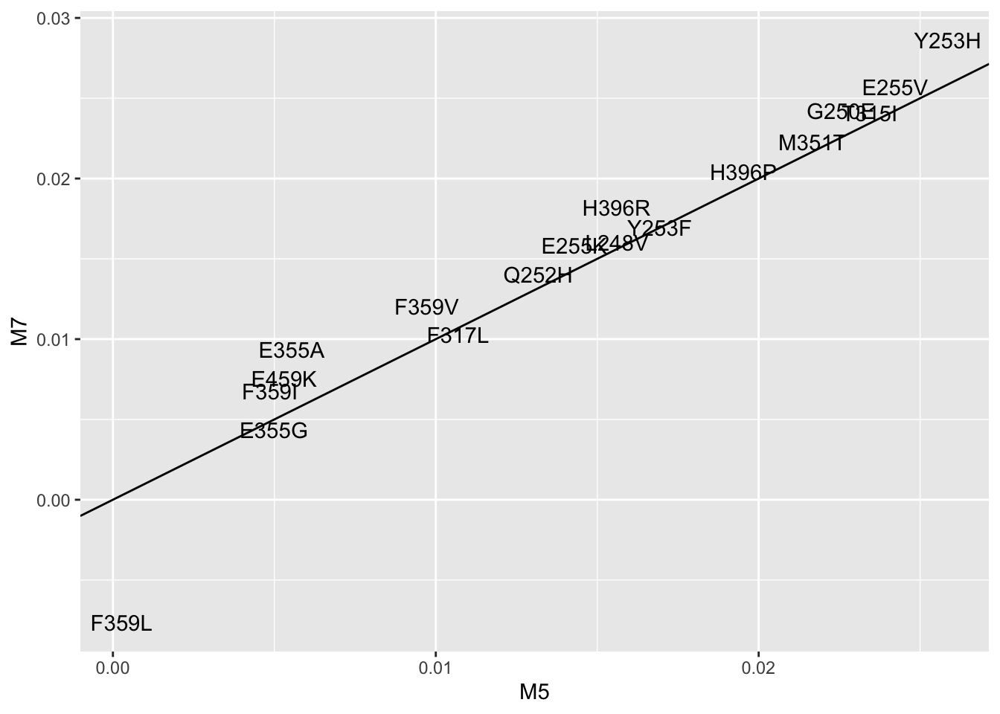

Last updated: 2020-04-20
Checks: 7 0
Knit directory: duplex_sequencing_screen/
This reproducible R Markdown analysis was created with workflowr (version 1.6.0). The Checks tab describes the reproducibility checks that were applied when the results were created. The Past versions tab lists the development history.
Great! Since the R Markdown file has been committed to the Git repository, you know the exact version of the code that produced these results.
Great job! The global environment was empty. Objects defined in the global environment can affect the analysis in your R Markdown file in unknown ways. For reproduciblity it’s best to always run the code in an empty environment.
The command set.seed(20200402) was run prior to running the code in the R Markdown file. Setting a seed ensures that any results that rely on randomness, e.g. subsampling or permutations, are reproducible.
Great job! Recording the operating system, R version, and package versions is critical for reproducibility.
Nice! There were no cached chunks for this analysis, so you can be confident that you successfully produced the results during this run.
Great job! Using relative paths to the files within your workflowr project makes it easier to run your code on other machines.
Great! You are using Git for version control. Tracking code development and connecting the code version to the results is critical for reproducibility. The version displayed above was the version of the Git repository at the time these results were generated.
Note that you need to be careful to ensure that all relevant files for the analysis have been committed to Git prior to generating the results (you can use wflow_publish or wflow_git_commit). workflowr only checks the R Markdown file, but you know if there are other scripts or data files that it depends on. Below is the status of the Git repository when the results were generated:
Ignored files:
Ignored: .Rhistory
Ignored: .Rproj.user/
Untracked files:
Untracked: analysis/grant_fig.pdf
Untracked: analysis/grant_fig_v2.pdf
Untracked: data/Combined_data_frame_IC_Mutprob_abundance.csv
Untracked: data/IC50HeatMap.csv
Untracked: data/Twinstrand/
Untracked: data/gfpenrichmentdata.csv
Untracked: data/heatmap_concat_data.csv
Untracked: grant_fig.pdf
Untracked: grant_fig_v2.pdf
Untracked: output/archive/
Untracked: output/ic50data_all_conc.csv
Untracked: shinyapp/
Unstaged changes:
Deleted: data/README.md
Modified: output/twinstrand_maf_merge.csv
Modified: output/twinstrand_simple_melt_merge.csv
Note that any generated files, e.g. HTML, png, CSS, etc., are not included in this status report because it is ok for generated content to have uncommitted changes.
These are the previous versions of the R Markdown and HTML files. If you’ve configured a remote Git repository (see ?wflow_git_remote), click on the hyperlinks in the table below to view them.
| File | Version | Author | Date | Message |
|---|---|---|---|---|
| Rmd | 2bba93e | haiderinam | 2020-04-20 | wflow_publish(“analysis/*.Rmd“) |
# 1. Look at whether the nonlinear Enrich 2, on its own, improves performance
# Make a version of Enrich 2 that includes your counts and use it to model out your stuf
twinstrand_maf_merge2=twinstrand_maf_merge%>%filter(!VariationType%in%"indel",tki_resistant_mutation%in%"True",!mutant%in%NA)%>%dplyr::select(!c(X,Sample,Chromosome))
sort(unique(twinstrand_maf_merge2$Start)) [1] 130862954 130862961 130862968 130862969 130862970 130862975 130862976
[8] 130872132 130872884 130872895 130872900 130872910 130873003 130873015
[15] 130873026 130873027 130874968 130874970 130878518sort(unique(twinstrand_maf_merge2$mutant)) [1] "A397P" "D276G" "E255K" "E255V" "E355A" "E355G" "E459K" "F311L" "F317L"
[10] "F359C" "F359I" "F359L" "F359V" "G250E" "H396P" "H396R" "L248V" "M351T"
[19] "Q252H" "T315I" "Y253F" "Y253H" "Y320C"a=twinstrand_maf_merge2%>%filter(experiment%in%"M3",time_point%in%"D6")
sum(a$AltDepth)[1] 13828sort(unique(a$mutant)) [1] "E255K" "E255V" "E355A" "E355G" "E459K" "F317L" "F359I" "F359V" "G250E"
[10] "H396P" "H396R" "L248V" "M351T" "Q252H" "T315I" "Y253F" "Y253H" "Y320C"a=twinstrand_maf_merge2%>%filter(experiment%in%"M3",time_point%in%"D0")
sum(a$AltDepth)[1] 529sum(a$AltDepth)[1] 529mean(a$Depth)[1] 31569.63#Based on a 1 in 1000 frequency and 18 mutants, we would expect the mean variant/Wt frequ to be 18 in 1000 at Day 0
#For a mean coverage of 32000, we would expect 568 mutants, which is almost exactly what we see!!!!
# 18/1000*31569
#Plot Wt decay rates for all experiments from D0 to D6
#M3 D0:
a=twinstrand_maf_merge2%>%filter(experiment%in%"M3",time_point%in%"D0")
(mean(a$Depth)-sum(a$AltDepth))/mean(a$Depth)[1] 0.9832434#M3 D3:
a=twinstrand_maf_merge2%>%filter(experiment%in%"M3",time_point%in%"D3")
(mean(a$Depth)-sum(a$AltDepth))/mean(a$Depth)[1] 0.7775412#M3 D6:
a=twinstrand_maf_merge2%>%filter(experiment%in%"M3",time_point%in%"D6")
(mean(a$Depth)-sum(a$AltDepth))/mean(a$Depth)[1] 0.090339630.7775412/0.9832434 #D0D3[1] 0.79079220.09033963/0.9832434 #D0D6[1] 0.091879210.09033963/0.7775412#D3D6[1] 0.1161863#D0D3=WtD0/WtD3
#M5
#M5 D3:
a=twinstrand_maf_merge2%>%filter(experiment%in%"M5",time_point%in%"D3")
(mean(a$Depth)-sum(a$AltDepth))/mean(a$Depth)[1] 0.5171676#M5 D6:
a=twinstrand_maf_merge2%>%filter(experiment%in%"M5",time_point%in%"D6")
(mean(a$Depth)-sum(a$AltDepth))/mean(a$Depth)[1] 0.0626516#M7
#M7 D0:
#M7 D3:
a=twinstrand_maf_merge2%>%filter(experiment%in%"M7",time_point%in%"D3")
(mean(a$Depth)-sum(a$AltDepth))/mean(a$Depth)[1] 0.493164#M7 D6:
a=twinstrand_maf_merge2%>%filter(experiment%in%"M7",time_point%in%"D6")
(mean(a$Depth)-sum(a$AltDepth))/mean(a$Depth)[1] 0.03849379twinstrand_simple_melt_merge=twinstrand_simple_melt_merge%>%mutate(wt_ratio=case_when(experiment%in%"M3"&&duration%in%"d0d3"~0.7775412/0.9832434,
experiment%in%"M3"&&duration%in%"d0d6"~0.09033963/0.9832434,
experiment%in%"M3"&&duration%in%"d3d6"~0.09033963/0.7775412))
twinstrand_simple_melt_merge=twinstrand_simple_melt_merge%>%filter(experiment%in%"M3")%>%mutate(wt_ratio=case_when((experiment%in%"M3"&duration%in%"d0d3")~0.7775412/0.9832434,
(experiment%in%"M3"&duration%in%"d0d6")~0.09033963/0.9832434,
(experiment%in%"M3"&duration%in%"d3d6")~0.09033963/0.7775412))
#Subtract the log of the Wt ratio from the log ratios
twinstrand_simple_melt_merge=twinstrand_simple_melt_merge%>%mutate()4/20/20 Analysis of Enrich2 vs Shendure vs our method
#First, creating day 0 values for M4,M5,M7, and sp_enu_3. Whenever you see any of these experiments, add M3's or M6's or Sp_Enu4's D0 counts for its counts.
M3D0=twinstrand_maf_merge%>%filter(experiment=="M3",time_point=="D0")
M5D0=M3D0%>%mutate(experiment="M5")
M7D0=M3D0%>%mutate(experiment="M7")
M6D0=twinstrand_maf_merge%>%filter(experiment=="M6",time_point=="D0")
M4D0=M6D0%>%mutate(experiment="M4")
Enu3_D0=twinstrand_maf_merge%>%filter(experiment=="Enu_3",time_point=="D0")
Enu4_D0=Enu3_D0%>%mutate(experiment="Enu_4")
twinstrand_maf_merge=rbind(twinstrand_maf_merge,M5D0,M7D0,M4D0,Enu4_D0)
twinstrand_maf_merge2=twinstrand_maf_merge%>%filter(!VariationType%in%"indel",tki_resistant_mutation%in%"True",!mutant%in%NA)%>%dplyr::select(!c(X,Sample,Chromosome))
# twinstrand_maf_merge2=twinstrand_maf_merge2%>%filter(experiment=="M5")
#Wt count is the same for all variants on a given time_point for a given experiment
wt_count=twinstrand_maf_merge2%>%group_by(experiment,time_point)%>%summarize(wt_count=mean(Depth)-sum(AltDepth))
twinstrand_maf_merge2=merge(twinstrand_maf_merge2,wt_count,by = c("experiment","time_point"))
twinstrand_maf_merge2=twinstrand_maf_merge2%>%mutate(log_ratio=log10(AltDepth/wt_count))
#Converting time from factor to numeral
twinstrand_maf_merge2=twinstrand_maf_merge2%>%mutate(time=case_when(time_point=="D0"~0,
time_point=="D3"~72,
time_point=="D6"~144))
ggplot(twinstrand_maf_merge2%>%filter(experiment%in%c("M3","M6")),aes(x=time,y=log_ratio,color=factor(experiment)))+geom_point()+geom_line()+facet_wrap(~factor(mutant))
ggplot(twinstrand_maf_merge2,aes(x=time,y=log_ratio,color=factor(experiment)))+geom_point()+geom_line()+facet_wrap(~factor(mutant))
#Next steps: regress the slope of this line for M3 and then for M6. See how well these R1 and R2 compare relative to Shendure's estimates
# lm(log_ratio~time,data = twinstrand_maf_merge2%>%filter(experiment=="M3",mutant=="T315I"))
# lm(log_ratio~time,data = twinstrand_maf_merge2%>%filter(experiment=="M6",mutant=="T315I"))
# lm(log_ratio~time,data = twinstrand_maf_merge2%>%filter(experiment=="M6",mutant=="T315I"))
# a=lm(log_ratio~time,data = twinstrand_maf_merge2%>%filter(experiment=="M6",mutant=="T315I"))
# a$coefficients[2]
twinstrand_lm=twinstrand_maf_merge2%>%group_by(experiment,mutant)%>%summarise(lm_slope=lm(log_ratio~time)$coefficients[2])
lm_cast=dcast(twinstrand_lm,mutant~experiment,value.var="lm_slope")
ggplot(lm_cast,aes(x=M6,y=M3,label=mutant))+geom_text()+geom_abline()Warning: Removed 5 rows containing missing values (geom_text).
ggplot(lm_cast,aes(x=M6,y=M4,label=mutant))+geom_text()+geom_abline()Warning: Removed 6 rows containing missing values (geom_text).
ggplot(lm_cast,aes(x=M3,y=M5,label=mutant))+geom_text()+geom_abline()Warning: Removed 5 rows containing missing values (geom_text).
ggplot(lm_cast,aes(x=M5,y=M7,label=mutant))+geom_text()+geom_abline()Warning: Removed 5 rows containing missing values (geom_text).
#Things to add to dataset: Right now you only have M3 and M6. Take M3D0 and add it to M5D0, and M7D0. Take M6D0 and add it to M4D0. Then look at correlations of all populations# twinstrand_simple_melt_merge=read.csv("../output/twinstrand_simple_melt_merge.csv",header = T,stringsAsFactors = F)
twinstrand_simple_melt_merge=read.csv("output/twinstrand_simple_melt_merge.csv",header = T,stringsAsFactors = F)
#Plot growth rates of all mutants next to each other. If our replicates have such a low error, why are we worried about correcting that "error"? The source of error is probably the non-conformity between IC50s and pooled measurements. Answer: our mutants aren't THAT close together. It's worth looking at whether the non-linear transformation improves results.
twinstrand_simple_melt_merge$mutant=factor(twinstrand_simple_melt_merge$mutant,levels = as.character(unique(twinstrand_simple_melt_merge$mutant[order((twinstrand_simple_melt_merge$netgr_pred),decreasing = T)])))
plotly=ggplot(twinstrand_simple_melt_merge%>%filter(duration%in%"d3d6"),aes(x=factor(mutant),y=netgr_obs,color=experiment))+geom_point()+cleanup
ggplotly(plotly)a=twinstrand_simple_melt_merge%>%filter(experiment%in%"M3",mutant%in%"T315I")
plotly=ggplot(twinstrand_simple_melt_merge%>%filter(experiment%in%c("M6","M3")),aes(x=factor(mutant),y=netgr_obs,color=duration))+geom_point()+facet_wrap(~experiment)+cleanup
ggplotly(plotly)plotly=ggplot(twinstrand_simple_melt_merge,aes(x=factor(mutant),y=netgr_obs,color=duration))+geom_point()+facet_wrap(~experiment)+cleanup
ggplotly(plotly)a=twinstrand_simple_melt_merge%>%
mutate(netgr_obs=case_when(experiment=="M6"~netgr_obs+.03,
experiment=="M5"~netgr_obs+.015,
experiment%in%c("M3","M5","M4","M7")~netgr_obs))
plotly=ggplot(a%>%filter(experiment%in%c("M6","M3")),aes(x=factor(mutant),y=netgr_obs,color=duration))+geom_point()+facet_wrap(~experiment)+cleanup
ggplotly(plotly)#Looks like F359I is at ALTDEPTH of 1 at D6 which is why it's so erroneous. Also notice that you only see E355A in 3 of the experiments. All of this points to the fact that scaling error bars on growth rates based on mutant coverage is a good idea.
a=twinstrand_maf_merge%>%filter(experiment%in%"M6",mutant%in%"F359I")
a=twinstrand_maf_merge%>%filter(experiment%in%"M6",!mutant%in%"NA",!tki_resistant_mutation%in%NA)
a=twinstrand_maf_merge%>%filter(experiment%in%"M4",!mutant%in%"NA",!tki_resistant_mutation%in%NA)
a=twinstrand_maf_merge%>%filter(experiment%in%"M7",mutant%in%"E459K")
#What even is the point of doing duplex sequencing if your sequencing coverage is 30,000?
sessionInfo()R version 3.5.2 (2018-12-20)
Platform: x86_64-apple-darwin15.6.0 (64-bit)
Running under: macOS 10.15.4
Matrix products: default
BLAS: /Library/Frameworks/R.framework/Versions/3.5/Resources/lib/libRblas.0.dylib
LAPACK: /Library/Frameworks/R.framework/Versions/3.5/Resources/lib/libRlapack.dylib
locale:
[1] en_US.UTF-8/en_US.UTF-8/en_US.UTF-8/C/en_US.UTF-8/en_US.UTF-8
attached base packages:
[1] stats graphics grDevices utils datasets methods base
other attached packages:
[1] reshape2_1.4.3 plotly_4.9.1 dplyr_0.8.4
[4] boot_1.3-24 lme4_1.1-21 Matrix_1.2-18
[7] fitdistrplus_1.0-14 npsurv_0.4-0 lsei_1.2-0
[10] survival_3.1-8 MASS_7.3-51.5 ggplot2_3.2.1
[13] lmtest_0.9-37 zoo_1.8-7 workflowr_1.6.0
loaded via a namespace (and not attached):
[1] tidyselect_1.0.0 xfun_0.12 purrr_0.3.3 splines_3.5.2
[5] lattice_0.20-38 vctrs_0.2.2 colorspace_1.4-1 viridisLite_0.3.0
[9] htmltools_0.4.0 yaml_2.2.1 rlang_0.4.4 later_1.0.0
[13] pillar_1.4.3 nloptr_1.2.1 glue_1.3.1 withr_2.1.2
[17] plyr_1.8.5 lifecycle_0.1.0 stringr_1.4.0 munsell_0.5.0
[21] gtable_0.3.0 htmlwidgets_1.5.1 evaluate_0.14 labeling_0.3
[25] knitr_1.27 fastmap_1.0.1 crosstalk_1.0.0 httpuv_1.5.2
[29] Rcpp_1.0.3 xtable_1.8-4 promises_1.1.0 scales_1.1.0
[33] backports_1.1.5 jsonlite_1.6 mime_0.8 farver_2.0.3
[37] fs_1.3.1 digest_0.6.23 stringi_1.4.5 shiny_1.4.0
[41] grid_3.5.2 rprojroot_1.3-2 tools_3.5.2 magrittr_1.5
[45] lazyeval_0.2.2 tibble_2.1.3 tidyr_1.0.2 crayon_1.3.4
[49] whisker_0.4 pkgconfig_2.0.3 data.table_1.12.8 httr_1.4.1
[53] assertthat_0.2.1 minqa_1.2.4 rmarkdown_2.1 R6_2.4.1
[57] nlme_3.1-143 git2r_0.26.1 compiler_3.5.2